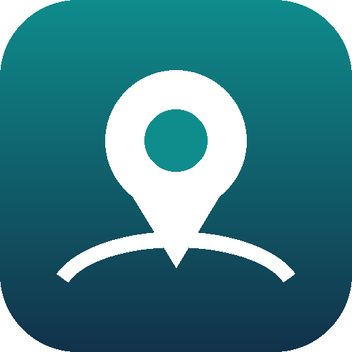

ศูนย์เครื่องมือวิทยาศาสตร์และเทคโนโลยีมหาวิทยาลัยวลัยลักษณ์
ติดตั้งครั้งเดียว ครั้งต่อไปกดไอคอนบนหน้าจอได้ทันที เข้าสู่ระบบด้วยอีเมล @mail.wu.ac.th
ต้องเปิดหน้านี้ใน Safari เท่านั้น ถ้าเปิดจากไลน์หรือ Chrome จะไม่มีเมนูนี้
ถ้าระบบยังไม่เปิด กดปุ่มด้านล่าง